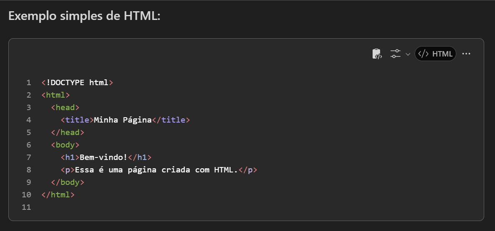
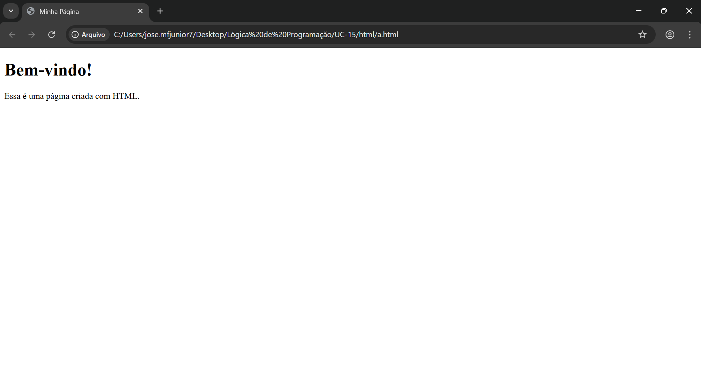

HTML


O que faz um desenvolvedor de HTML?
Principais funções de um desenvolvedor de HTML:
- Estruturar o conteúdo da página: Define os elementos da página como títulos, parágrafos,
listas, imagens, links, tabelas, formulários, etc.
- Organizar a hierarquia da informação: Usa tags HTML para garantir que o conteúdo seja bem
estruturado e acessível, tanto para usuários quanto para mecanismos de busca (SEO).
- Colaborar com CSS e JavaScript: Trabalha junto com desenvolvedores de CSS (para o estilo
visual) e JavaScript (para interatividade), integrando essas tecnologias ao HTML.
- Garantir acessibilidade e semântica: Utiliza tags semânticas como (header), (article),
(footer) para tornar o site mais acessível a leitores de tela e melhorar a compreensão do conteúdo.
- Testar e validar o código: Usa ferramentas para verificar se o HTML está correto e segue os
padrões da web (como os definidos pelo W3C).